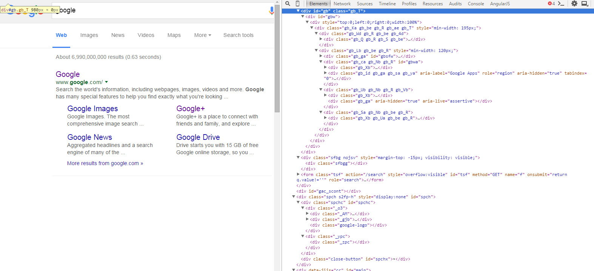

Web Components
The basics

Templating
<template>
... does not have to be recreated each time ...
Examples
<template id="mytemplate">
<img src="" alt="great image">
<div class="comment"></div>
</template>
Also inside for examples tables:
<table>
<tr>
<template id="cells-to-repeat">
<td>some content</td>
</template>
</tr>
</table>
Properties
- Content is unused until activated
- Content is considered not to be in the document
- No side effects
- Templates can be placed anywhere
Activating a template
<template id="mytemplate">
<img src="" alt="great image">
<div class="comment"></div>
</template>
var t = document.querySelector('#mytemplate');
t.content.querySelector('img').src = 'logo.png';
var clone = document.importNode(t.content, true);
document.body.appendChild(clone);
Live Example!
Template used: 0
Custom Elements
Registering Elements
var MyElement = document.registerElement('my-element');
is equivalent to...
var MyElement = document.registerElement('my-element', {
prototype: Object.create(HTMLElement.prototype)
});
Registering Elements
document.createElement('myelement').__proto__ === HTMLUnknownElement.prototype
document.createElement('my-element').__proto__ === HTMLElement.prototype
Instantiating Custom Elements
from HTML...
<my-element></my-element>
from JS...
document.body.appendChild(new MyElement());
Extending Elements
var MyElement = document.registerElement('my-element', {
prototype: Object.create(HTMLButtonElement.prototype),
extends: 'button'
});
Instantiating Extended Elements
from HTML...
<button is="my-element">
from JS...
var myElement = document.createElement('button', 'my-element');
or...
var myElement = new MyElement();
Adding JS properties and methods
var FunctionalElement = document.registerElement('functional-element', {
prototype: Object.create(HTMLElement.prototype, {
five: {
get: function() { return 5; }
},
notify: {
value: function() {
alert('notify() called');
}
}
})
});
Lifecycle Callbacks

Live Example!
var MyElementPrototype = Object.create(HTMLButtonElement.prototype);
MyElementPrototype.createdCallback = function () {
this.textContent = "I'm an my-element button!";
};
var MyElement = document.registerElement('my-element', {
prototype: MyElementPrototype,
extends: 'button'
});
var testdiv = document.querySelector('#CustomElementExample #testdiv');
testdiv.appendChild(new MyElement());
testdiv.appendChild(document.createElement('button', 'my-element'));
<div id="testdiv"><button is="my-element"></button></div>
Shadow DOM
<input id="slider-example" type="range">
shows...
Shadow DOM
<button>Hello, world!</button>
var host = document.querySelector('button');
var root = host.createShadowRoot();
root.textContent = 'Bye world!';
Without Shadow DOM
<p>I am on the outside</p>
<div>
<style>
p {color: red;}
</style>
<p>My name is:</p>
<p>Patrick</p>
</div>
I am on the outside
My name is:
Patrick
With Shadow DOM
<p>I am on the outside</p>
<p id="name-tag">Patrick</p>
<template id="my-template">
<style>
p {color: red;}
</style>
<p>My name is:</p>
<p><content></content></p>
</template>
var shadow = document.querySelector('#name-tag').createShadowRoot();
var template = document.querySelector('#my-template');
var clone = document.importNode(template.content, true);
shadow.appendChild(clone);
I am on the outside
Patrick
My name is:
Multiple Contents Tags
<div id="name-tag">
<span class="first">Bob</span>
<span>B. Love</span>
</div>
<template id="my-template">
<p>First name: <content select=".first"></content></p>
<p>Last name: <content select="span"></content></p>
</template>
Bob
B. Love
First name:
Last name:
HTML Imports
<script src>
<link rel="stylesheet">
<img>
...
Importing HTML
- iframe's
- AJAX
- HAX!
<script type="text/html">

Web Components to the rescue
<link rel="import" href="/path/to/imports.html">
Bundling resources
<link rel="import" href="bootstrap.html">
bootstrap.html could then be something like:
<link rel="stylesheet" href="bootstrap.css">
<link rel="stylesheet" href="fonts.css">
<script src="jquery.js"></script>
<script src="bootstrap.js"></script>
<script src="bootstrap-tooltip.js"></script>
<script src="bootstrap-dropdown.js"></script>
...
Browser Support
| Chrome | Opera | Firefox | Safari | IE/Edge | |